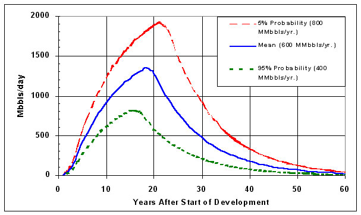

Figure 7. Projected Production for the High Development Rate of Technically Recoverable Oil Estimated at 5 Percent, Mean, and 95 Percent Probabilities for the ANWR Coastal Plain of the Alaska North Slope |
|  |
Source: Energy Information Administration, Reserves and Production Division. Based on USGS estimates of technically recoverable oil. |
Return to 2. Analysis Discussion.